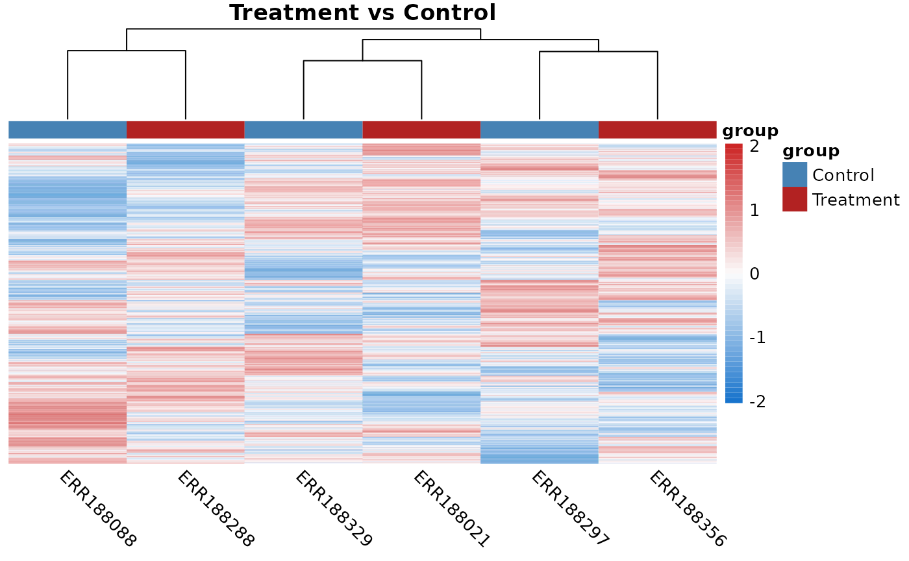
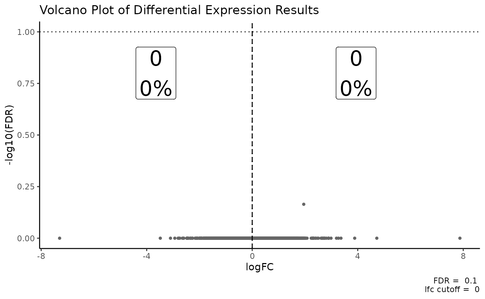

RNA-seq-workflow
RNA-seq-workflow.RmdOverview
Below, I will illustrate some of the functions present in the
coriell package by walking through a typical RNA-seq
workflow, starting with checking data for quality and then progressing
through quantifying with Salmon
and performing differential expression analysis with
edgeR.
Checking sequences for quality
The first step in any high-throughput analysis should be to check your reads for quality. FastQC is the de facto tool for this job.
To run fastqc enter the directory where your fastq files
are saved and run:
fastqc *.fastq.gzAdditional arguments can be passed to the program to increase the
number of parallel processes as well as specify the output directory.
e.g. fastqc *.fq.gz --threads 12 --outdir $OUT
An especially useful step following fastqc is to run the
program MultiQC which automatically
scans a directory and summarizes all QC files it finds. If you have many
samples multiqc is an invaluable tools for quickly
examining the overall sequencing quality
Aligning with Salmon
Assuming you have already built or downloaded a Salmon index then performing quantification with Salmon is run with a simple shell script:
#!/usr/bin/env bash
SAMPLE_IDS=sample-ids.txt
FQ_DIR=path/to/fastq/files
OUT_DIR=quants
SALMON_IDX=path/to/salmon_idx
THREADS=48
mkdir -p $OUT_DIR
for SAMPLE_ID in $(cat $SAMPLE_IDS); do
salmon quant \
-i $SALMON_IDX \
-l A \
-1 $FQ_DIR/${SAMPLE_ID}_R1.fq.gz \
-2 $FQ_DIR/${SAMPLE_ID}_R2.fq.gz \
--validateMappings \
--gcBias \
--seqBias \
--threads $THREADS \
-o $OUT_DIR/${SAMPLE_ID}_quants;
doneWhere sample-ids.txt contains the basenames of the fastq files like:
control1
control2
control3
treatment1
treatment2
treatment3Differential Gene Expression Analysis
For this sample analysis we will use the included data in the
tximportData package.
library(tximportData)
# Select the directory where the quants files are stored
dir <- system.file("extdata", package = "tximportData")
# Read in the sample metadata
samples <- read.table(file.path(dir, "samples.txt"), header = TRUE)
rownames(samples) <- samples$run
# List all quant files in dir
files <- file.path(dir, "salmon", samples$run, "quant.sf.gz")
# Name the files by their run ID
names(files) <- regmatches(files, regexpr("ERR[0-9]+", files))
# Read in the tx2gene file that maps transcripts to genes
tx2gene <- read.csv(file.path(dir, "tx2gene.gencode.v27.csv"))In your code, quant files will be saved in separate folders per sample if you followed the example script from above. The command to find these files might look more like:
files <- list.files(
path = "/path/to/OUT_DIR",
pattern = "quant.sf",
recursive = TRUE,
full.names = TRUE
)Import counts with tximport
We often want to perform differential expression not on the
transcript level but the gene-level. This requires summarizing the
counts and applying an offset to adjust for length biases. The easiest
way to import counts with an offset is to use the tximport
function with the “scaledTPM” option.
library(tximport)
# Import the counts using tximport
txi <- tximport(files, type = "salmon", tx2gene = tx2gene, countsFromAbundance = "scaledTPM")
#> reading in files with read_tsv
#> 1 2 3 4 5 6
#> summarizing abundance
#> summarizing counts
#> summarizing length
# Extract the counts matrix from the txi object
counts <- txi$countsFilter the count matrix
It is often only of interest to study the protein coding genes. To get the protein coding genes and the gene symbols all in one go it is usually easiest to work with GTF files directly.
The example data was generated using GENCODE v27 annotations on hg19. We can download this annotation file and use it to select the protein coding genes as well as extract other useful information about the genes.
# Download and imnport the annotations
url <- "https://ftp.ebi.ac.uk/pub/databases/gencode/Gencode_human/release_27/GRCh37_mapping/gencode.v27lift37.annotation.gtf.gz"
gtf <- data.frame(rtracklayer::import(url))
# Extract all of the protein coding genes from the GTF
protein_coding <- gtf[gtf$type == "gene" & gtf$gene_type == "protein_coding", "gene_id"]
# Removing trailing ids if present
protein_coding <- unique(gsub("_[0-9]+$", "", protein_coding))
# Filter the count matrix for protein coding genes
counts <- counts[rownames(counts) %in% protein_coding, ]Analysis with edgeR
library(edgeR)
#> Loading required package: limma
# Add an arbitrary group factor to the samples
samples$group <- gl(2, 3, labels = c("Control", "Treatment"))
# Specify group based design
design <- model.matrix(~ 0 + group, data = samples)
colnames(design) <- gsub("group", "", colnames(design))
# Import counts into edger
y <- DGEList(counts, samples = samples, group = samples$group)
# Filter for expression
keep <- filterByExpr(y, design)
y <- y[keep, ]
# Calculate normalization factors
y <- calcNormFactors(y, method = "TMM")
# Estimate genewise dispersion
y <- estimateDisp(y, design = design, robust = TRUE)
# Fit the model
fit <- glmQLFit(y, design, robust = TRUE)
# Specify contrasts to test
con <- makeContrasts(TvC = Treatment - Control, levels = design)
# Test for differential expression
qlf <- glmQLFTest(fit, contrast = con[, "TvC"])PCA
We can perform Principal Components Analysis on the normalized
logcounts using functions from edgeR and
PCAtools. See the PCAtools
vignette for more useful functions.
library(PCAtools)
#> Loading required package: ggplot2
#> Loading required package: ggrepel
#>
#> Attaching package: 'PCAtools'
#> The following objects are masked from 'package:stats':
#>
#> biplot, screeplot
# Calculate the normalized log counts
logcounts <- cpm(y, log = TRUE)
# Perform PCA on the 75% most variable logcounts
pca.res <- pca(logcounts, metadata = samples, removeVar = 0.25)
#> -- removing the lower 25% of variables based on variancePlot the pca biplot
biplot(
pca.res,
colby = "group",
hline = 0,
vline = 0,
hlineType = 2,
vlineType = 2,
legendPosition = "bottom",
title = "PCA on logcounts",
caption = "75% Most Variable Features"
)
Heatmap
The coriell package has a wrapper around
pheatmap that sets sensible defaults for sequencing data.
Any argument that can be passed to pheatmnap can be passed
to the quickmap function to override the defaults.
library(coriell)
# Create a dataframe of annotations to use
col_df <- samples[, "group", drop = FALSE]
# Create color scheme for treatment conditions
ann_colors = list(group = c("Control" = "steelblue", "Treatment" = "firebrick"))
# Plot the heatmap, passing additional args to pheatmap
quickmap(
logcounts,
annotation_col = col_df,
annotation_colors = ann_colors,
main = "Treatment vs Control"
)
Volcano Plots
The coriell contains functions for plotting volcano
plots and displaying the counts of up and down regulated genes on the
plots. The aesthetics of the plots produced by plot_volcano
and plot_md below can be modified. Please check the
function documentation for details.
Of course for this analysis there are no differentially expressed genes.
# First, convert the qlf testing results to a data.frame
qlf_df <- edger_to_df(qlf)
plot_volcano(qlf_df) + ggtitle("Volcano Plot of Differential Expression Results")
Gene Ontology Analysis
The coriell function includes a function to make API
calls to the PANTHER database for
gene ontology analysis.
# Extract top 100 genes with positive logFC from the DE results
top_genes <- qlf_df[qlf_df$logFC > 0, ]
top_genes <- head(top_genes[order(top_genes$logFC, decreasing = TRUE), ], n = 100)
# Perform Gene Ontology Analysis with PANTHER
go.res <- panther_go(top_genes$feature_id, organism = "9606", annot_dataset = "biological_process")
# View the results of the enrichment analysis
head(go.res$table)
#> number_in_list fold_enrichment fdr expected number_in_reference
#> 1: 14 0.6331181 1 22.11277867 15176
#> 2: 14 0.6331181 1 22.11277867 15176
#> 3: 2 28.0122449 1 0.07139735 49
#> 4: 2 28.0122449 1 0.07139735 49
#> 5: 2 26.9137255 1 0.07431153 51
#> 6: 2 26.9137255 1 0.07431153 51
#> pValue
#> 1: 0.001589624
#> 2: 0.001589624
#> 3: 0.002496175
#> 4: 0.002496175
#> 5: 0.002692963
#> 6: 0.002692963
#> term
#> 1: GO:0009987
#> 2: cellular process
#> 3: GO:0048247
#> 4: lymphocyte chemotaxis
#> 5: GO:0045737
#> 6: positive regulation of cyclin-dependent protein serine/threonine kinase activity
#> plus_minus
#> 1: -
#> 2: -
#> 3: +
#> 4: +
#> 5: +
#> 6: +